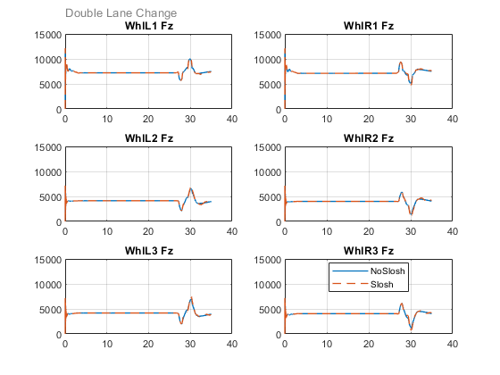
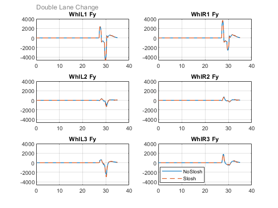
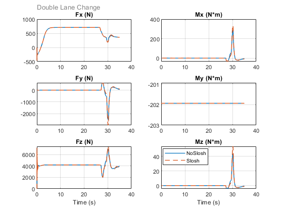
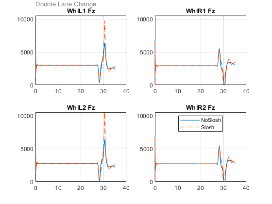

Compare Tire Forces for Trucks with and Without Slosh Dynamics
The commands below run the two simulations and compare the resulting tire forces. The code below can be modified to perform other comparisons.
Contents
Run Two Tests
sm_car_run_two_sims('sm_car_Axle3','Double Lane Change','NoSlosh','Axle3_009','Axle2_002','Slosh','Axle3_009','Axle2_004');
Compare Normal Force for Vehicle
sm_car_plot11_compare_tire_force_torque('NoSlosh', log_A_NoSlosh, 'Slosh', log_B_Slosh, 'var', 'Fz', 'vehicle','Double Lane Change')
Compare Lateral Force for Vehicle
sm_car_plot11_compare_tire_force_torque('NoSlosh', log_A_NoSlosh, 'Slosh', log_B_Slosh, 'var','Fy', 'vehicle','Double Lane Change')
Compare Forces and Torques for Vehicle Left Rear Wheel
sm_car_plot11_compare_tire_force_torque('NoSlosh', log_A_NoSlosh, 'Slosh', log_B_Slosh, 'wheel', 'WhlL3', 'vehicle','Double Lane Change')
Compare Normal Forces Trailer
sm_car_plot11_compare_tire_force_torque('NoSlosh', log_A_NoSlosh, 'Slosh', log_B_Slosh, 'var', 'Fz', 'trailer','Double Lane Change')
close all